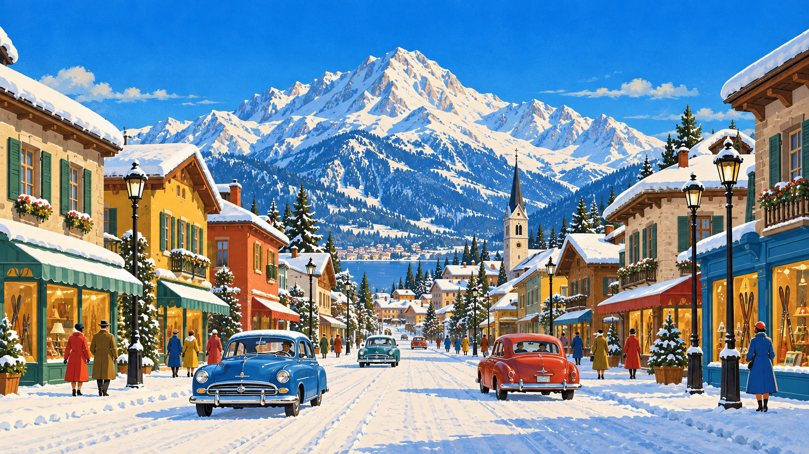
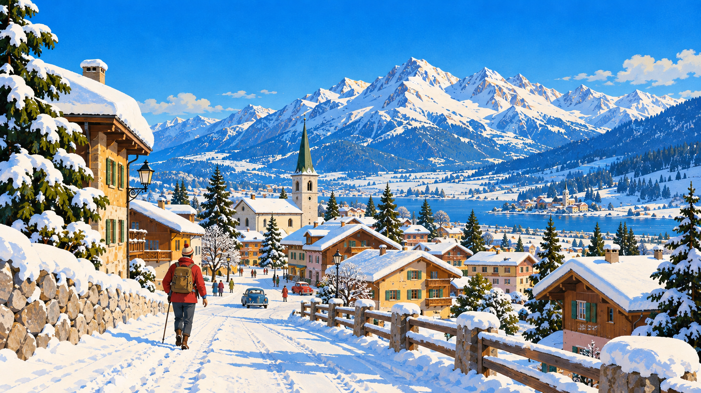
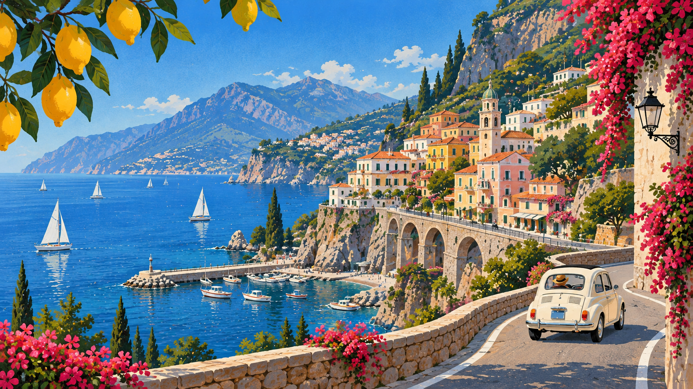

Selected Work
Your fit diary — for remembering what you wore, where you went, and how it felt.

A fast spreadsheet-like workspace for large datasets.

A compact visual research tool for collecting references and interface fragments.

A lightweight daily log for observations, links and experiments.